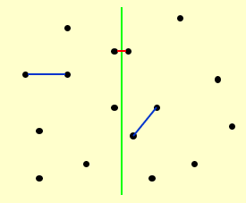
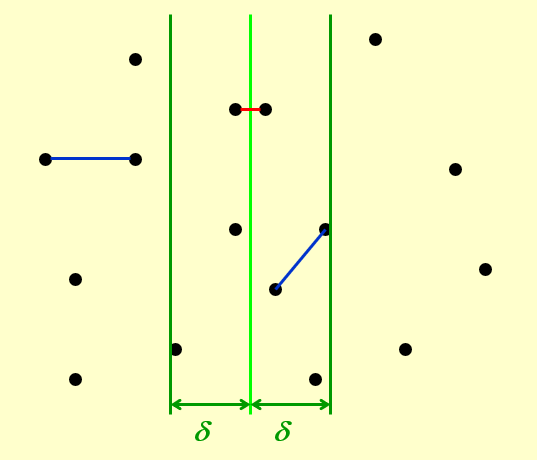
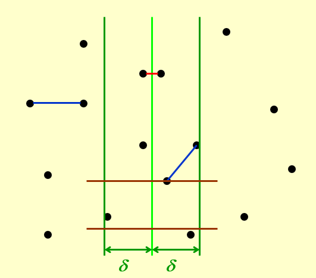
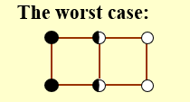
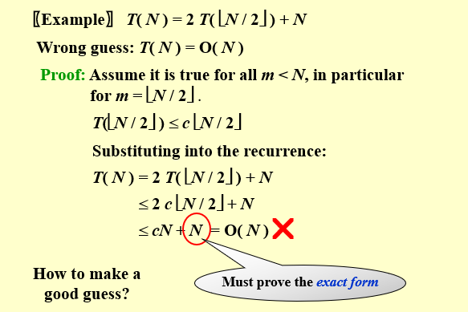
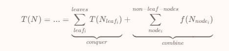
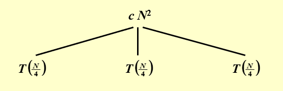
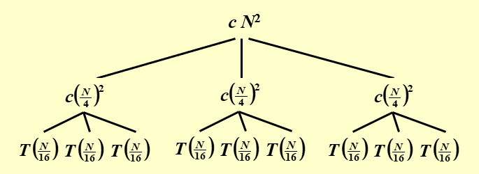
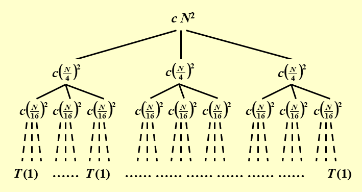
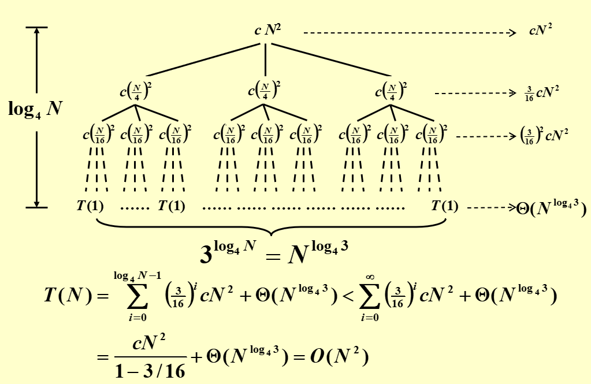

约 1114 个字 8 行代码 预计阅读时间 6 分钟
Chap 7 | “Divide and Conquer”
章节启示录
本章节主要介绍了分治法，它的基本思想是将一个问题分解为若干个规模较小的相同问题，然后递归地解决这些子问题，最后将这些子问题的解合并得到原问题的解，一个比较经典的案例就是归并排序。本章节重点在于如何分析一个递归式的时间复杂度。
General recurrence: \(T(N)=aT(N/b)+f(N)\)
1.分治法的例子：最近点对¶
给定平面中的 \(N\) 个点。找到最接近的一对点。
方法
1.将序列分为左右两部分，分别求解最大子序列和；
2.求解跨越中点的最大子序列和；
3.比较三者的大小，取最大值；
我们将图中的平面用绿色的线分成两个部分，然后继续用以上的方法进行划分……

其中最主要的问题是如何高效的解决方法中的第 \(2\) 步,如果检查 \(N(N-1)/2\) 个点对，那么额外的时间复杂度将是 \(T=O(N^2)\)
减少搜索范围
首先我们假设在第一步中求得的最短距离\(\large\delta\)，然后如果第二步中的距离大于\(\large\delta\)，那么我们则无需考虑。也就是说，我们可以划定一个界限，在界限之外的点距离一定大于\(\large\delta\)，因此它们就不会被纳入考虑范围。
- 我们首先从 \(x\) 方向上进行考虑。

如图所示，只有在两条绿线中的点才会被纳入考虑范围，即有可能更新答案。但这样依旧可能出现极端恶劣的情况，于是我需要从二维上去考虑这个问题。
- 从 \(y\) 方向上考虑。

如图所示，对在 \(x\) 范围内的任意两个点，如果纵向距离大于 \(\large\delta\) 那么就不考虑。
因此，对于选定点 \(\large p_{l_i}\) ,其所有可能导致答案更新的点都被框定在一个 \(\large 2\delta × \delta\) 的矩形中。
不难发现，在最理想最理想的情况下——闭区间、允许点重合的情况下，这个矩形最多也只能放八个点（两边各四个）：

因此我只需要遍历这几种情况，而遍历这些情况的时间复杂度为 \(O(N)\) ，即 \(f(N)=O(N)\) 。
所以我们可以得到最近点对的分治法的递推公式： $$ T(N)=2T(N/2)+O(N)=O(NlogN) $$ 伪代码：
/* points are all in the strip */
/* and sorted by y coordinates */
for ( i = 0; i < NumPointsInStrip; i++ )
for ( j = i + 1; j < NumPointsInStrip; j++ )
if ( Dist_y( Pi , Pj ) > δ )
break;
else if ( Dist( Pi , Pj ) < δ )
δ = Dist( Pi , Pj );
- 以上是分治方法的一个具体例子，主要用来说明分治的大致思路。下面将进入本章节的重点内容，如何计算一个分治递归表达式的时间复杂度。
2.三个计算方法:¶
2.1 Substitution method — guess, then prove by induction¶
顾名思义，这个方法需要我们先行猜测答案是多少，然后代入验证（使用数学归纳法）。也就是中学阶段我们常说的题感（连蒙带猜）
一个例子🌰
- Guess: \(T( N ) = O( N log N )\)
-
Proof:对足够小的 \(m<N\) ,有： $$\large T(\lfloor N/2 \rfloor) ≤ c\lfloor N/2 \rfloor log \lfloor N/2 \rfloor $$
-
代入到递归表达式中：
$$\large T(N)=2 T(\lfloor N / 2 \rfloor) + N ≤ 2c\lfloor N/2 \rfloor log \lfloor N/2 \rfloor+N≤ $$ $$\large cN(logN-log2)+N≤cNlogN,\;\;for \;\; c≥1 $$
证明到最后的表达式一定要严格相等

- 代换法最大的缺陷就是我们找到的（猜测的）结果复杂度不一定准确，不一定足够紧凑，而且对于较为复杂的递归式，猜测也十分的困难。
2.2 Recursion-tree method（递归树法）¶
递归树法其实也是猜测（bushi），利用树清晰的性质，将递归的过程可视化，更加便于我们进行猜测。（与代换法的原理基本一致，但优化了猜测的过程） 对于一个递推式，我们将它不断展开以后，形式大概长成这个样子：(用了修佬的公式！)

- 具体来说解释其含义，combine 部分就是在每一次“分治”的处理时间，如合并当前的子问题分治后的结果，体现在递推式的 \(f(N)\) 部分；而 conquer 部分指的是当“分治”的“治”在“分”的末端的体现，即对于足够小的规模的问题，不再需要继续“分”的时候，对其处理的开销。
一个例子🌰
初始情况时，\(T(N)\) 是根和叶子节点的总和，也就是说根其实是 \(f(N)\) 部分，而不是 \(T(N)\)




- 在上图中， \(\large a=3,b=4,f(N)=\Theta(N^2)\) ,也就是每次都分成了 \(3\) 个子问题，一共分裂的次数（树的高度）是 \(\large log_4N\) 。然后我们对所有的开销进行累加，最底层是一个常数，也就是公式中的 \(\large \Theta(N^{log_43})\),随后我们将其扩展到∞进行等比数列的计算。
2.3 Master method（主方法）¶
主方法是我们需要重点掌握（记忆的），当然讨论的基础都是针对形如 \(\large T(N)=aT(N/b)+f(N)\) 这样的递归式。
形式1
1.若 \(\large f(N)=O(N^{log_b\;a-\varepsilon}),for \;\;\varepsilon＞0\) ，那么 \(\large T(N)=\Theta(N^{log_b\;a})\)
2.若 \(\large f(N)=\Theta(N^{log_b\;a}),for \;\;\varepsilon＞0\) ，那么 \(\large T(N)=\Theta(N^{log_b\;a}logN)\)
3.若 \(\large f(N)=\Omega(N^{log_b\;a+\varepsilon}),for \;\;\varepsilon＞0\) ，且 \(\large af(N/b)<cf(N),for \;\; c<1 \;\; and \;\; \forall N>N_0\) ，那么\(\large T(N)=\Theta(f(N))\)
- 主方法其实可以类比成“主元法”。我们考虑主要的变量，也就是去分析combine部分和conquer部分谁大谁小。当 \(f(N)\) 足够小时，以conquer开销为主（case 1），当一样大时（case 2），当 $f(N) $足够大时，以combine开销为主（case 3）
证明这里就不写了，看看修佬的吧！证明方法
形式2
1.若 \(\large af(N/b)=\kappa f(N)\;\;for\;\;some\;\;\kappa<1\) ，那么 \(\large T(N)=\Theta(f(N))\)
2.若 \(\large af(N/b)=K f(N)\;\;for\;\;some\;\;K>1\) ，那么 \(\large T(N)=\Theta(N^{log_b\;a})\)
3.若 \(\large af(N/b)=f(N)\) ，那么 \(\large T(N)=\Theta(f(N)log_b\;N)\)
一个例子🌰
- 已知：\(\large a=4,b=2,f(N)=NlogN\)
\(\large af(N/b)=4(N/2)log(N/2)=2NlogN-2N\)
此处由于最后多了一个小尾巴 \(2N\)，因此用不了形式2的主定理。但它可以用形式1的主定理！但我们注意到
\(\large f(N)=NlogN=O(N^{logb_\;a-\varepsilon})=O(N^{2-\varepsilon})\)
- 因此，由形式1中的case 1可得， \(\large T(N)=O(N^{log_b\;a})=O(N^2)\)
形式3
第三种形式讨论了一系列特殊形式，当递推关系满足:
\(\large T(N)=aT(N/b)+\Theta(N^klog^pN)\;\;Where \;\;a≥1,b>1,p≥0\)
它的时间复杂度为：